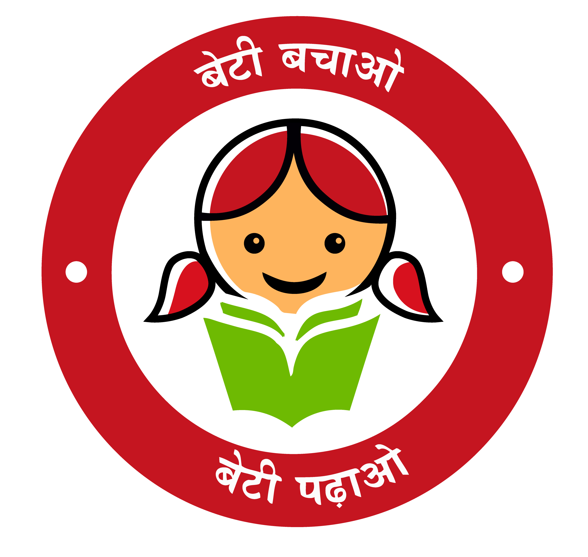

Rashtriya Ispat Nigam Limited
Visakhapatnam Steel Plant
(A Govt. of India Enterprise)


This internal portal enables RINL teams to log UPS-related complaints, submit preventive maintenance reports, and track ETL contract progress — all from a centralized dashboard.
Instantly log issues related to UPS systems across all RINL zones. Complaints are categorized and stored with asset details for quicker response by contractors and coordinators.
Submit monthly PM reports in a structured digital format. This improves traceability of maintenance activities and ensures timely upkeep of UPS equipment under ETL contracts.
Coordinators and EICs can track complaint resolution status and review PM submissions. Built-in workflow simplifies review, feedback, and approval — all in one place.
The complaint module allows contractors and plant personnel to report issues related to UPS systems across all zones. Each complaint is tagged with an asset number, timestamp, and location for effective resolution tracking.
Coordinators and EICs can review submitted complaints, monitor resolution progress, and escalate if required. The system ensures timely action, accountability, and improved communication between teams.
Log a New ComplaintThe PM module enables contractors to upload monthly Preventive Maintenance checklists for each UPS asset as per ETL contract requirements. The digital submission ensures structured reporting and traceable records.
EICs and coordinators can review these reports, verify fieldwork, and approve or return them with remarks — streamlining the entire compliance workflow across departments and zones.
Submit PM ReportThis module allows authorized users to view the monthly preventive maintenance bills submitted under the ETL UPS contract. It includes information on asset-wise PM completion, submission dates, and billing verification status.
Coordinators and EICs can cross-check reports, ensure compliance, and monitor billing summaries — ensuring accountability and process transparency across maintenance cycles.
View PM Bill